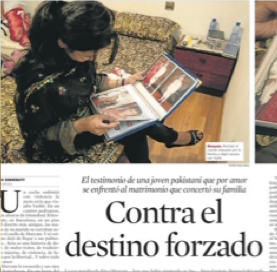
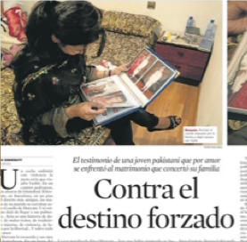

El presente texto pretende reconstruir el proceso y parte de los resultados de una investigación financiada realizada en 2009-2010 cuyo objetivo era comprender, en su complejidad, las relaciones entre escolarización, inmigración y género, a partir de la interpretación de los relatos visuales sobre las trayectorias de ‘éxito escolar’ de jóvenes inmigradas de los países del sur de Asia, en la educación secundaria obligatoria y postobligatoria, y la formación de personas adultas en Cataluña (España). Principalmente nos interesaba problematizar la noción de ‘éxito’ y ampliarla a cuestiones como:
Una primera revisión bibliográfica del contexto estatal, evidenció la ‘invisibilidad’ y poca atención de las variables de ‘género y sexo’ en las investigaciones sobre inmigración y educación desde una perspectiva feminista y postcolonial (AAVV, 2008; SPIVAK, 1993; SANDOVAL, 2000). Menos frecuentes eran todavía las aportaciones que optaban por metodologías visuales y narrativas de investigación (DESAI, 2002; CLANDININ y CONNELLY, 2000; STAIKIDIS, 2008). Por eso nos fueron de más utilidad las publicaciones de contextos como el anglosajón, con una tradición más extensa en investigaciones sobre educación e inmigración desde un marco feminista y postcolonial (AFSHAR 1989; BHATNAGAR 1970; SAFIA 2009; RIZUI 2006…). También por su tradición migratoria, que les ha permitido realizar estudios longitudinales sobre las segundas generaciones e interpretar las trayectorias escolares y sus procesos de integración social y cultural a través de la educación en los países de acogida (ABBAS, 2004; GHUMAN, 2003; SHAIN, 2003). Algo que todavía es muy emergente en España.
Página 67Estas investigaciones aportan un análisis crítico sobre las variables de género, etnia, raza, clase social, castas, etc. en diálogo con otros elementos que van más allá de la relación mujer-división del trabajo. Por ejemplo la relación entre hijas, hermanos, padres y madres; el papel de la religión; la participación política en grupos transnacionales; las interacciones con redes sociales e instituciones; la definición de infancia y juventud; las nociones de pertinencia cultural; la división del espacio público-privado; las relaciones entre jóvenes y escolarización; los cambios identitarios de las jóvenes en la reconstrucción de su experiencia de escolarización; las nociones de futuro y éxito, o de matrimonio y familia; la relación con la familia, la religión y la sexualidad; las experiencias de movilidad social y adquisición de estatus; el modo en cómo la migración reconfigura otras conceptualizaciones del género y la desigualdad entre mujeres y hombres; el papel de los medios de comunicación y la cultura visual en la construcción de su identidad; las presuposiciones y pre-concepciones que relacionan inmigración femenina con dependencia y opresión inamovible de los roles de género, etc.
Como mujeres investigadoras, con nuestras propias diversidades, (blancas, europeas, procedentes de Chile y de Brasil, heterosexuales, queer) nuestra principal preocupación era no caer en una simplificación de la representación. Nos preguntábamos ¿cómo nos representamos y se representan el éxito escolar las mujeres inmigradas? ¿quiere decir acceder al bachillerato y a la universidad? ¿enamorarse y casarse? ¿reactivar el deseo de aprender?. Y ¿cómo podemos asumir el reto y la dificultad de construir una relación/conversación a través del trabajo de campo etnográfico? ¿cómo abordar la corporización en la investigación? ¿podemos construir narrativas visuales que recojan las historias de vidas teniendo en cuenta el debate sobre la ‘recuperación de la voz’, sin caer en la espectacularización y/o cosificación para escapar de la tradición de ‘transparencia’ del testimonio como veracidad esencialista de su experiencia? El reto y la dificultad mayores residían en construir una relación/conversación a través del trabajo de campo etnográfico. Para ello revisamos diversos estudios, aunque la mayoría de publicaciones que se interesan por recuperar las experiencias de jóvenes inmigrantes desde metodologías etnográficas, lo hacen con un formato de entrevistas e historias de vida (MILLER, 2000; OKPALAOKA, 2008…) que no construye narraciones ni perspectivas interpretativas de forma compartida y colaborativa. Mucho más difícil todavía fue encontrar investigaciones que construyeran narrativas visuales en términos de reflexividad para dar sentido y comprender sus experiencias dentro y fuera de la escuela.
Para intentar dar respuesta a algunas de estas preguntas compartimos lecturas sobre teoría queer, corporización y procesos migratorios (AHMED, 2000, 2003 y 2006); estudios poscoloniales y estudios subalternos (AA.VV., 2008…); Spivak (1988 y 2008); teoría poscolonial feminista y postestructuralismo crítico (LEWIS y MILLS 2003; SANDOVAL, 2000…); aportaciones sobre el papel de la voz y la autobiografía en la investigación cualitativa (JACKSON y MAZZEI, 2009); y también etnografía visual deconstructiva en investigación educativa (RIFÁ VALLS, 2009).
Para sintetizar, la investigación etnográfica postestructuralista y deconstructiva cuestiona la ‘autoridad’ de las investigadoras a través de estrategias de deconstrucción que visibilizan los mecanismos de legitimación de los discursos etnográficos (separación investigador-investigado; dentro-fuera de campo; datos en bruto-interpretación…), lo que permite problematizar la objetualización del Otro y la producción de narrativas totalizantes. Para ello se incorporan estrategias de complejidad como el palimpsesto; el collage; la reflexividad; la indeterminación; la ambigüedad e inestabilidad; la contradicción y la tensión discursiva; la desfamiliarización y el extrañamiento; la explicitación de los prejuicios del investigador; las estrategias basadas en la creatividad, la evocación y la estética como otras formas de narrar; la visibilización de las condiciones de producción, construcción y edición del trabajo de registro, montaje e interpretación…
Página 68Producir narrativas deconstructivas implica abrir el relato a la heterogeneidad con el fin de evitar discursos y prácticas homogeneizadoras y estables en el acto de narrar al otro. Desde la etnografía poscolonial feminista se señala la imposibilidad de rescatar la voz de los/las subalternos, ya que reforzaría las relaciones de poder que se perpetúan en la etnografía tradicional, es decir, las narrativas de inmigración como acto doble de colonización (occidental). Los feminismos poscoloniales han repensado las nociones fijas y estables de sujeto, sexo, sexualidad, género, clase, religión… como elementos constituyentes de la subjetividad, que no son ni estables ni fijos sino discursivos, y están sujetos a un contexto específico de enunciación y corporización. Esta revisión crítica ha dotado a los sujetos subalternos -en los márgenes de posibilidad de existencia normativos-, de la posibilidad de repensarse desde otros espacios de significación, enunciación y representación. Partiendo de Spivak, intentamos evitar la construcción e imposición de relatos universales y genéricos a partir de poner la atención en las diversidades, singularidades, diferencias y márgenes, y revisando de forma crítica las historias culturales sobre el desplazamiento, la migración, la resignificación territorial, etc. Para ello desarrollamos una serie de estrategias metodológicas coherentes con este marco teórico. La etnografía visual fue un punto de partida (PINK, 2013). Detectamos más de veinte estrategias diferenciadas de investigación visual narrativa de las cuales destacamos: desnaturalización y desidentificación; reflexividad y dialogismo; producción de narrativas corporizadas; deconstrucción; fricción entre voz e imagen... Nos fijamos en las aportaciones de los Estudios de la Cultura Visual y la Teoría Fílmica feminista, que han aportado estrategias como la auto-representación; las narrativas encarnadas y la reflexividad. A nivel metodológico, este proyecto se sitúa principalmente en el contexto de la investigación narrativa (CLANDININ, 2007; ATKINSON et al., 2001), de la investigación educativa basada en las artes o la cultura visual (BARONE y EISNER, 2006; HERNÁNDEZ, 2008) y la investigación feminista (GLUCK y PATAI, 1991; REINHARZ, 1992). Concretamente, las estrategias metodológicas que se han desarrollado:
Al formar cinco equipos de trabajo simultáneos, la proliferación de materiales hizo que cada caso fuera muy diferente, de modo que los procesos y estrategias adoptadas han ido variado en cada grupo. Desde observaciones de aula, entrevistas grupales e individuales; visionado conjunto de cine de Bollywood; acompañamiento a una de sus casas; proceso de creación de fotos; cesión de cámara de vídeo un fin de semana para que pudieran registrar imágenes…
Página 69En esta investigación participaron un grupo de mujeres jóvenes recién llegadas o que formaban parte de familias inmigradas con edades comprendidas entre los 14 y los 32 años, que cursaron y cursaban estudios en centros de educación secundaria y centros de formación de personas adultas en Cataluña. La mayoría de las jóvenes procedían del Pakistán (mayoritariamente de la región del Punjab) y algunas de la India. La investigación se llevó a cabo a partir de observaciones, entrevistas y conversaciones con diversos grupos en 4 centros educativos de Educación Secundaria públicos, y 2 Centros de Formación de Personas Adultas (uno de los cuales funciona como sede esporádica de una asociación de mujeres), situados en Barcelona y su área metropolitana. Inicialmente llegaron a sumar más de 50 participantes en conversaciones grupales, pero finalmente sólo se reconstruyó en profundidad la trayectoria de 20 jóvenes. Durante el trabajo de campo en los 6 centros cada grupo mantuvo su propia calendarización adaptándose a las disponibilidades de las jóvenes, la escuela y las propias investigadoras. En parte porque teníamos que organizar bien los equipos de trabajo para poder ajustarnos a la logística técnica de las filmaciones (cámaras, micrófonos…) y preparar metodologías y protocolos.
| Centro/ entidad | Espacios contactados | Nº de jóvenes participantes | Procedencia y edad India | Procedencia y edad Pakistán |
|---|---|---|---|---|
Escuela 1 (Área metropolitana de Barcelona) |
Aula de acogida de ESO (3º y 4º) - CFGM de administración y finanzas |
3 |
1 (18 años) |
2 (15 años) |
Escuela 2 (Área metropolitana e Barcelona) |
CFGM Farmacia y Parafarmacia - CFGS Laboratorio de diagnóstico clínico |
5 |
2(entre 17 y 20 años) |
3(entre 17 y 20 años) |
Escuela 3 (Barcelona ciudad) |
4º ESO - 1º de Bachillerato |
6 |
1 (15 años) |
5 (entre 15 y 18 años) |
Centro de Formación para personas adultas (CFA) 1 (área metropolitana de Barcelona) |
Castellano, Nivel básico |
2 |
2 (28 y 32 años) |
|
Centro de Formación para personas adultas (CFA) 2 (Ciudad de Barcelona) |
Entidad de mujeres del Pakistán, India, Nepal y Bangladesh |
4 |
4 (14, 15, 16 y 17 años) |
|
| Número total de protagonistas |
20 |
4 |
16 |
|
“Tabla 01” Muestra de las jóvenes participantes centros, edades y procedencias
Para las entrevistas usamos un guión semi-estructurado adaptado a cada contexto, y que revisamos a raíz de una prueba piloto realizada anteriormente, que acabó por ser también un caso de estudio. Lo interesante de la prueba piloto es que nos permitió testear con los materiales audiovisuales, así como experimentar en el proceso de edición y montaje mediante la construcción de un guión y escaleta de montaje colectivo. Este proceso de edición colaborativa fue discutido a partir de la organización de temas que emergieron en el trabajo de campo realizado sólo por una parte del equipo de investigación, y fue muy útil en nuestro proceso de formación inicial, puesto que al tiempo que investigábamos con el marco teórico teníamos la oportunidad de poner a prueba también las metodologías y despliegues teóricos en el propio campo, con la recogida de evidencias y su posterior edición. También facilitó la negociación con las participantes de los otros centros que formaron parte del estudio.
Durante la construcción de los casos fue de gran ayuda la conversación mantenida con Shabana, fundadora de una Asociación, que nos ayudó a comprender la complejidad de cuestiones como la migración a las grandes ciudades; la división de castas y cómo se ven alteradas por el acceso a la formación y al trabajo:
Página 70¿Qué reflejo tiene la división de castas en los países de origen? (Aída) - Es básicamente operativo para el matrimonio según las chicas. En cuanto a la situación económica, te mueves con gente de tu misma situación económica, es independiente de las castas (Shabana). ¿Cómo se forman las castas? (Aída) - Si hay un nivel económico... Las chicas con estudios se casan con chicos de castas más altas... (Shabana). ¿Cómo se reconoce que una persona es de una casta? ¿cómo tienes un control de esto con toda la población? (Verónica). - En grandes ciudades como en Barcelona, o en Pakistán, Lahore, Islamabad, Karachi, hay un funcionamiento diferente, así mismo como en la India, en New Delhi y Bombay, son grandes ciudades, hay mezclas de diferentes castas en la comunidad. A veces cuando vienen esconden su pasado, para cambiar su vida, en Pakistán no tanto, pero en la India dan tanta presión no dejan levantar de castas bajas, pero en Pakistán también, si están estudiados y tienen dinero, pero por castas no le dan respeto y casarse es muy difícil (Shabana).
La cuestión de las castas fue un tema latente en la investigación, quizás porque aunque sea una dimensión estructural muy importante en sus sociedades de origen, la percepción de la edad influya, puesto que sólo salió el tema con las jóvenes casadas. También podría deberse a los cambios que se producen durante los procesos migratorios y las preocupaciones presentes, más orientadas al estudio como una posibilidad de mejora y ascensión social. No obstante, la preocupación del matrimonio estuvo continuamente presente ya que de él depende también el período de formación, la elección de los estudios y la búsqueda de trabajo.
Los cinco casos de estudio presentan una gran complejidad y variedad. No obstante, una serie de ejes temáticos los atraviesan:
Como es imposible en lo que me queda de texto reconstruir las complejidades y decisiones metodológicas en la edición de cada una de las cinco narrativas visuales, me voy a centrar únicamente en el estudio de caso en el que participé junto con Aída Sánchez de Serdio. Fue en un centro de secundaria situado en una zona céntrica de Barcelona con un índice del 39,17% de estudiantes de procedencia inmigrada de fuera de la Unión Europea, llegando a veces al 100% de inmigrantes por aula. De las 6 jóvenes que finalmente participaron durante casi 6 meses de conversaciones, 4 procedían del Pakistán y 1 de la India. La investigación se inició con una contradicción: nos proponíamos hacer una investigación visual con sujetos que se resistían a hacerse visibles. Entonces… ¿Qué podía aportar hacer una investigación visual en estas condiciones?
Evidenciar las tensiones que implica la visibilización de los sujetos (especialmente en el caso de las jóvenes musulmanas).
Expresar las dimensiones más corpóreas y encarnadas de la investigación: la presencia y/o ausencia del cuerpo, la materialidad de la relación...
Relacionar/contrastar las voces y relatos con situaciones que escapan a la explicación verbal.
Entrelazar sus narrativas con otras narrativas audiovisuales mediáticas con las que se relacionan las jóvenes.
El rechazo a ser registradas nos alertó de la importancia que tendría en la investigación la cuestión de la mirada, y nos planteó contradicciones sobre la dialéctica entre visibilidad e invisibilidad, así como la noción de voz y experiencia. En este sentido, Peggy Phelan (1996, p. 7) nos ayudó a cuestionar la ideología de lo visible problematizando afirmaciones como:
También otros teóricos/as, entre ellos Hito Steyerl (2008) fueron de gran ayuda para complejizar la relación entre visualidad y políticas documentales, poniendo sobre la mesa una serie de dilemas:
El mayor reto se encontraba en cómo articular la tensión entre visibilidad y enunciación. Pensábamos que eso termina por deslegitimar a los sujetos investigados ya que parece que no tienen nada más que aportar que ‘una experiencia concreta’, no mediada, ‘auténtica’, y que debe ser interpretada y explicada a una audiencia, lo que nos llevaría a una división de poder jerárquica. Se trataba de romper con el deseo voyeur de mirar, conocer y objetualizar ‘al otro’ a través del conocimiento. Homi Bhabha (1994) reflexiona sobre esta cuestión cuando comenta la imposibilidad en la demanda de conocer al Otro, una tensión entre la designación y la identificación, en el acto de enunciación ‘propio’.
Página 72The desire for the Other is doubled by the desire in language, which splits the difference between Self and Other so that both positions are partial; neither is sufficient into itself. […] the very question of identification only emerges in-between disavowal and designation. It is performed in the agonistic struggle between the epistemological, visual demand for a knowledge of the Other, and its representation in the act or articulation and enunciation. (BHABHA, 1994, p. 50) .
Por eso la noción de ‘invisibilidad activa’ de Phelan nos pareció útil. La autora comenta que la confianza que las políticas identitarias depositan en la visibilidad tiene que ser problematizada, porque también hay poder en permanecer invisible, y limitaciones en la representación visual, basada en el discurso y la mirada controladora. De hecho es una cuestión que emergió en las entrevistas cuando nos comentaron que se sentían vigiladas y controladas por los hombres de su comunidad. Por este motivo, mantener un espacio de resistencia invisible y activo en el vídeo nos parecía fundamental. Su rechazo a no usar imágenes para protegerse de ser expuestas y controladas también evitó su objetualización en el ensayo visual, aunque al mismo tiempo contribuyó a su (¿doble?) invisibilidad. Esta ‘ausencia’ nos prevenía del riesgo de exotización, aunque se podía dar también en la incorporación de sus referentes de la cultura visual -que a nosotras nos parecían un tanto kitsch- y nos preguntábamos hasta qué punto no podían parecer desvalorizados. Otra cuestión que nos preocupaba era no caer en la mitificación de su agencia y grado de conciencia en algunas de las afirmaciones que incorporamos y que, descontextualizadas, podían adquirir una dimensión exageradamente empoderante. No obstante, era importante reconocer sus argumentos y representaciones. Respecto a la cuestión de cómo articular nuestra enunciación y la suya, nos llevó a no querer caer en las clásicas dualidades entre investigador-investigado; sujeto-objeto; teoría-experiencia...
Por todas estas cuestiones decidimos adoptar estrategias de montaje que teóricos del cine y cineastas como Trinh T. Minh-Ha, Joaquín Jordà, Hito Steyerl, Tracey Moffat, Chantal Ackerman, Jean-Louis Comolli, aportan para exponer estas fricciones y tensiones:
Con todas estas cuestiones sobre la mesa nos pusimos a ordenar y editar todo el material. El resultado fue un corto de 20:21 minutos de duración que titulamos Los límites del deseo: un ensayo visual sobre los límites de la visibilidad, y que constaba de siete secuencias que ordenaban la tematización del estudio de caso.

‘Figura 01’ Collage de dos frames del vídeo: sobre el proceso de negociación de las condiciones de la investigación y escaleta del proceso de edición.
‘Figura 02’ Collage: cámara de videovigilancia de la escuela y taller de karaoke realizado antes de fiestas de Navidad del 2009.
En esta breve secuencia de introducción al vídeo se optó por no incorporar imagen mientras se escuchaba el audio de negociación con las participantes sobre la política de las imágenes en la investigación, la invitación a producir imágenes...
Aborda su experiencia escolar, especialmente en el aula de acogida, valorada positivamente porque les facilitó el aprendizaje del nuevo idioma, aunque los contenidos les parecían simples y supeditados al conocimiento de la lengua. Criticaron la alta concentración de estudiantes de la misma procedencia geográfica y lingüística en toda la escolarización, lo que les dificultaba el aprendizaje del idioma. Señalaron que en sus países de origen el nivel es más difícil y alto, en especial en la enseñanza de la lengua inglesa. Es importante matizar lo que entienden por ‘difícil’ y ‘alto nivel’: afirman que en Cataluña el profesorado es cercano y explica las cosas detenidamente mientras que en sus países de origen son más estrictos, hasta el punto de ejercer castigos físicos. Por tanto parece ser que la dificultad percibida radica en la pedagogía transmisiva, la autoridad, exigencia y ausencia de seguimiento pedagógico. Los primeros días de escuela se hacen difíciles porque su escolarización no fue mixta, lo que dificulta la interacción y trabajo con los compañeros y profesores, por la incomodidad que produce. Otro elemento perturbador tiene que ver con el tipo de contenidos impartidos, especialmente los relativos al cuerpo y sexualidad o la educación física (ellas y las familias consideran que las ropa deportiva expone demasiado a las miradas de los demás, especialmente de los chicos).
‘Figura 03’ Collage: imágenes aportadas por Farzana sobre el Hijab y escaparate de tienda de telas para confección cerca de la escuela.
‘Figura 04’ Collage: zona cercana a la escuela donde los hombres pakistaníes juegan al cricket (cámara oculta) e imagen grabada por Farzana de una madre jugando en el parque con sus hijos.
Respecto a las cuestiones de identidad, cuerpo y género, la presión sobre las formas apropiadas de vestir es un elemento que aparece en todos los casos. Llevar pañuelo deviene un eje central de la diferencia. A veces en el centro han tenido que sacárselo a petición del profesorado. Una vez fuera de la escuela se lo colocan de nuevo (a excepción de la Rajinder procedente de India o Ani, que se crió en Londres).
Página 74Valoran de forma positiva las salidas y excursiones que la escuela organiza, ya que a menudo son la única oportunidad de salir del barrio o de los límites familiares. Con todo, en la mayoría de casos no tienen permiso para pasar una noche fuera de casa, excepto la joven de la India. Esta cuestión la relacionan con la im/posibilidad de aprender informalmente y de conocer más cosas: cuestiones básicas como el idioma, la socialización y la autonomía:
Mi hermano sí tiene permiso para salir pero yo no. Para ir al Instituto sí, pero para otras cosas no. Mi hermano sí. Por eso que mi hermano sabe más que yo: castellano, catalán… Siempre sabe más (Farzana).
Otro aspecto que puede tener consecuencias en la continuidad y expectativas de futuro en sus vidas y estudios es la proximidad geográfica del centro, uno de los argumentos que determina la elección del centro y que condiciona también que las familias las autoricen a seguir estudiando bachillerato.
Pero al final no voy a hacer el bachillerato en otro centro porque mis padres no me dejan. Dicen que está lejos. Hay que ir con metro y todo por la mañana (Rajinder).
‘Figura 05’ Collage: taller de danza del vientre realizado antes de fiestas de Navidad (2009) en la escuela, e imagen registrada por Farzana.
 

‘Figura 06’ Collage: tatuajes de henna que nos hizo Fatima; noticia recogida en prensa sobre los matrimonios forzados en Cataluña; frame del culebrón ‘Uttaran’ que seguían algunas de las jóvenes.
Esta menor presencia en el espacio público de la que hablábamos incrementa el uso intensivo del espacio privado, quedando en las casas, ya sea para bailar Bollywood, cocinar, conversar o ver series y películas por Internet, a menudo con contenidos románticos o idealizaciones de las relaciones afectivas y la adolescencia.
La permanencia en los estudios a largo plazo depende del matrimonio el cual determinará, en gran medida, la opción para ciclos formativos, que tienen menor duración que una carrera universitaria. Así, el factor que condiciona la elección de una carrera superior o un ciclo formativo no es tanto el éxito académico como las expectativas familiares de matrimonio y las decisiones subsiguientes, por ejemplo el lugar de residencia futuro en función del marido (se da por supuesto que el matrimonio será siempre con un compatriota).
Mi madre no quiere que cuando nos casemos vengamos en España, dice ‘podéis iros en cualquier parte del mundo’ [...] porque con el chico que vendréis, si no le gusta, si no quiere estar aquí. Ojala... ese chico quiere estar viviendo en Pakistán, no quiere ir fuera del país [...] (Ani).
‘Figura 07’ Collage: aula de la escuela en la que se imparte el Ciclo Formativo de Grado Medio de Atención a las Personas en Situación de Dependencia, e imágenes del barrio cercano al centro donde se aprecian carteles con los lemas: ‘Queremos un barrio digno!!!’, ‘Queremos un barrio indignado’, ‘Somos un barrio digno’, ‘Stop racismo y transfobia’ o ‘Uribe es paramilitar’.
Aunque algunas todavía no lo habían pensado, para la mayoría de ellas existe la aspiración de un futuro profesional (derecho, medicina, odontología...), con una independencia económica y un reconocimiento familiar. También se da una elección sobre el futuro profesional basada en el apoyo a la familia y a la comunidad más amplia, como en el caso de Madia que expresa su opción de estudiar derecho para especializarse en extranjería y ayudar a personas que tienen que enfrentarse a procesos legales complejos, como en alguna ocasión se ha encontrado su familia. También ha estudiado los derechos de las mujeres en el matrimonio en la Mesquita y defiende su futura autonomía económica:
Es mejor tener una carrera por tu cuenta y que el marido no te esté diciendo continuamente ‘tu estás viviendo por mí o porque yo trabajo’. No, o sea yo traeré mi sueldo y si lo acepta bien y si no pues que se aguante (Madia).
Página 75AAVV. (2008). Estudios postcoloniales. Ensayos fundamentales. Madrid: Traficantes de sueños [cap. de Nirmal Puwar: Poses y construcciones melodramáticas].
Abbas T. (2004). The Education of British South Asians: Ethnicity, Capital and Class Structure. Basingstoke: Palgrave-Macmillan.
Afshar H. (1989) Education: hopes, expectations and achievements of Muslim women in West Yorkshire. Gender and Education, 1 (3): 261-272.
Ahmed S. (2003). Uprootings/Regroundings: Questions of Home and Migration, (co-editat amb Claudia Castañeda, Anne-Marie Fortier and Mimi Sheller). Oxford: Berg.
_______. (2006). Queer Phenomenology: Orientations, Objects, Others. Durham: Duke University Press.
_______. (2000). Strange Encounters: Embodied Others in Post-Coloniality. Londres: Routledge.
Atkinson P.; Coffey A.; Delamont S.; Lofland J. y Lofland L. (2001) (eds.). Handbook of ethnography. Londres, Thousand Oaks y Nova Delhi: Sage.
Barone T. y Eisner E. (2006). Arts-based educational research. A Green J.L; Camilli G. y Elmore P-B. (2006) (eds.). Handbook of Complementary Methods in Education Research, Washington DC and New Jersey: AERA, Lawrence Erlbaum Ass. Publishers.
Bhabha H. (1994) The Location of Culture. London: Routledge.
Bhatnagar J. (1979). Immigrants at School. Londres: Cornmarket Press.
Clandinin J. (2007) (ed.). Handbook of Narrative Inquiry. Londres, Thousand Oaks Nova Delhi: Sage.
Comolli J.L. (2002) Filmar para ver: escritos de teoría y crítica de cine. Buenos Aires: Ediciones Simurg: Cátedra La Ferla.
Ghuman P. (1994). Coping with Two Cultures. British Asian and Indo-Canadian Adolescents. UK: Multilingual Matters.
Gluck Sh.B. e Patai D. (1991). Women’s Words. The Feminist Practice of Oral History. Londres y Nova York: Routledge.
Jackson A.Y. & Mazzei L.A. (Eds.). (2009). Voice in qualitative inquiry: Challenging conventional, interpretive, and critical conceptions in qualitative research. [cap. 1 y 8].London: Routledge.
Lewis R. & Mills, S. (Eds.) (2003). Feminist Postcolonial Theory. A Reader. Edinburgh: Edinburh University Press.
Miller R.B. (2000). Researching Life Stories and Family Histories. Londres, Thousand Oaks y Nova Delhi: Sage Publications.
Hernández F. (2008). La investigación basada en las artes, Propuestas para repensar la investigación en educación. Educatio Siglo XXI, 26: 85-118.
Okpalaoka Ch. (2008). Can they theorize?: Empowering West African immigrant girls through their narratives of ethnic identity construction. A Paper presented at the annual meeting of the National Women's Studies Association, Millennium Hotel, Cincinnati, OH, Jun 18, www.allacademic.com (descargado el 25 de Septiembre del 2009).
Phelan P. (1996) Unmarked. The Politics of Performance. London: Routledge.
Pink S. (2013) Doing Visual Ethnogrpahy. London: Sage Publications.
Reinharz, Sh. (1992). Feminist Methods in Social Research. Nova York y Oxford: Oxford University Press.
Rifà Valls, M. (2009). Deconstructing immigrant girls’ identities through the production of visual narratives in a Catalan urban primary school. Gender and Education, 21 (6): 671-688.
Rizui F.B. y Lavia J. (2006). Postcolonialism and education: negotiating a contested terrain. Pedagogy, Culture and Society, 14 (13): 249-262.
Safia H. (2009). Plotting a History: Black and Postcolonial Feminisms in ‘New Times’. Race, Ethnicity and Education, 12 (1): 1-10.
Sandoval, Ch. (2000). Methodology of the Opressed. Massachussets: University of Minnesota Press.
Shain F. (2003). The Schooling and Identity of Asian Girls. Staffordshire: Trentham Books.
Spivak G. (2008). Other Asias. Oxford: Blackwell Publishing.
______. (1993). Outside the Teaching Machine. Londres: Routledge.
______. (1988). Can the subaltern speak? Marxism and the Interpretation of Culture. Urbana and Chicago: University of Illinois Press, 271-313.
Steyerl H. (2008) ¿Pueden hablar los testigos? Acerca de la filosofía de la entrevista. European Institute for Progressive Cultural Policies. eipcp.net
_______. (2004) La política de la verdad. Documentalismo en el ámbito artístico. ‘Ficcions’ documentals. Barcelona: Caixaforum.
Judit Vidiella é licenciada em Belas Artes pela Universitat de Barcelona, Espanha, e doutora em Belas Artes pela mesma Universidade, na qual trabalhou primeiro como bolsista de investigação e docência e depois como professora associada durante 13 anos. Atualmente é professora Auxiliar convidada na Universidade de Évora, Portugal. Sua atividade se concentra no campo de formação de profesores, das pedagogías críticas e culturais e nos estudos de performance e práticas femininistas. Membro do grupo de pesquisa ESBRINA, Barcelona. E.mail: jpages@uevora.pt